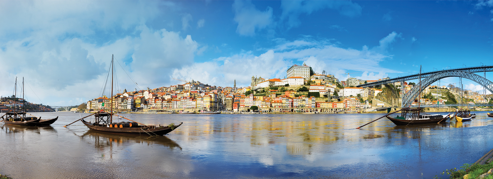

Home: Rua Óscar da Silva nº88 6ºB, Porto, Paranhos
University: Faculdade de Economia (FEP)
Subway: Combatentes
João's University: Faculdade de Engenharia (FEUP)
Downtown: Baixa do Porto
Hospital: Hospital S.João
Airport: Aeroporto Francisco Sá Carneiro
Pressing the address will open a google maps page with the location